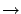

Siguiente: El explorador
Subir: Componentes de la ventana
Anterior: La barra de menú
Índice General
El mapa es una cartografía digital en la cual se ubica toda la
información georeferenciada. La misma se ubica en capas y las
posibles capas son:
- Altura de terreno: se representa en niveles de gris
- Manzanas: se representa en azul
- Edificios: se representa en verde
- Resultados de una predicción (potencia, línea de vista, C/I,
cobertura): si se están representando valores de potencia, estos se
representan mediante tonos que van del blanco al negro, pasando por la gama de amarillos y naranjas, según se indica en la
barra de escala de potencia. Si se está representando cobertura
o línea de vista se utiliza el color naranja.
También se ubican los sitios que hayan sido creados, los cuales se
representan con una cruz de color rojo, y al estar seleccionados en
el explorador se resaltan con un mayor tamaño.
Puede en todo momento ocultarse alguna de las capas presentes, esto
se hace desde la barra de menú. Por ejemplo seleccionando:
Menú Ver
 Capa
Ver Capa Manzanas
Clickeando con el botón derecho del mouse en cualquier punto del
mapa aparece un menú que permite hacer diferentes operaciones sobre
el mismo, como por ejemplo zoom (ver figura 3). Las
mismas pueden hacerse también mediante el teclado (las teclas
correspondientes a cada acción se indican en el menú).
Figura 3:
El menú que aparece al clickear con el botón derecho del
mouse en el mapa
|
|
Siguiente: El explorador
Subir: Componentes de la ventana
Anterior: La barra de menú
Índice General
SAPO